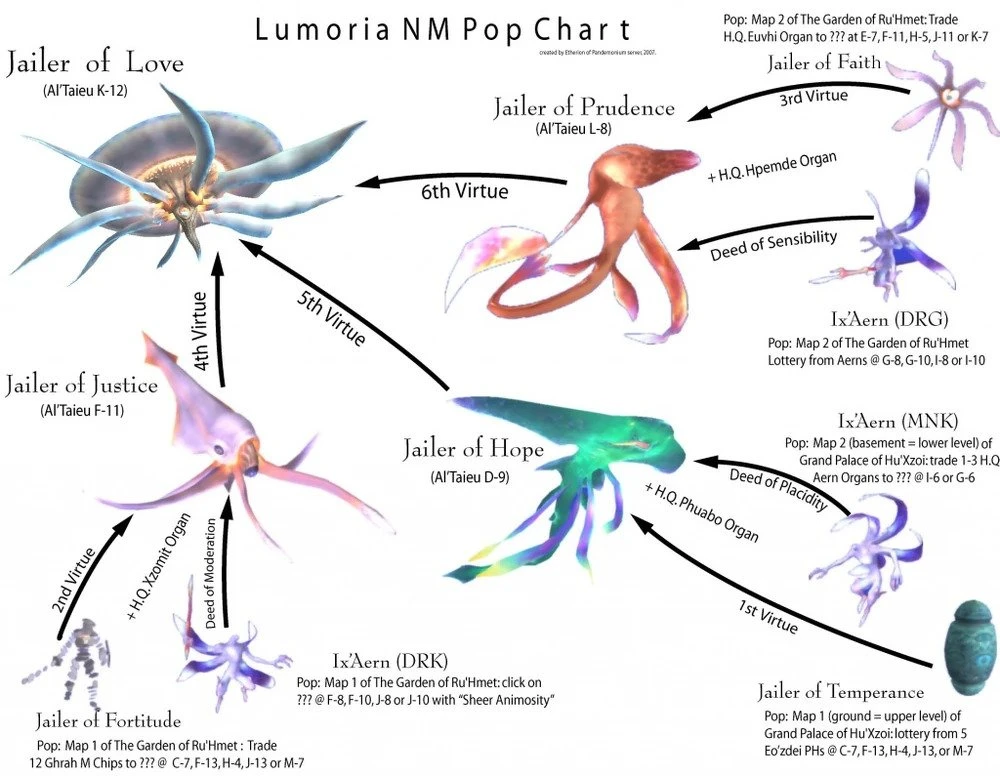

Level 75 reference · Zenith rules
|
Job: Black Mage, Warrior Notorious Monster |
|
Zone |
Level |
Drops |
Steal |
Spawns |
Notes |
|
1 |
A,T(H) | |||
|
HP = Detects Low HP; M = Detects Magic; Sc = Follows by Scent; T(S) = True-sight; T(H) = True-hearing JA = Detects job abilities; WS = Detects weaponskills; Z(D) = Asleep in Daytime; Z(N) = Asleep at Nighttime | |||||
 Image source
Image source


Image source
Notes:
- Popped by trading First Virtue, Deed of Placidity and HQ Phuabo Organ to a ??? at D-9.
- Uses all Phuabo abilities.
- Seems to favor Aerial Collision over other Phuabo abilities.
- May use Mighty Strikes multiple times.
- If Jailer of Hope uses the Phuabo ability Plasma Charge, he shortly gains the ability to instantly cast Burst II and Thundaga III. Plasma Charge can be dispelled, although the ability to cast the spells can not. Taking measures to avoid these spells is highly recommended (Shadowbind works very well).
- Melee attacks have the effect of Stun
Dialogue
The "???" at D-9 says:
"Knoweth...thou?
Firs...irtue...
Deed...tranqu...ser...ity...
...receptac...from phua...
...I...cannot...deciph...them"
The fragmented dialogue is referring to the First Virtue, the Deed of Placidity (tranquility, serenity) and a HQ Phuabo Organ (the receptacle from a Phuabo).
Adapted from Eden Wiki: Jailer of Hope · Contributors and history · CC BY-SA 4.0. Revision 1930. Layout, links and optional background text adapted for Zenith.